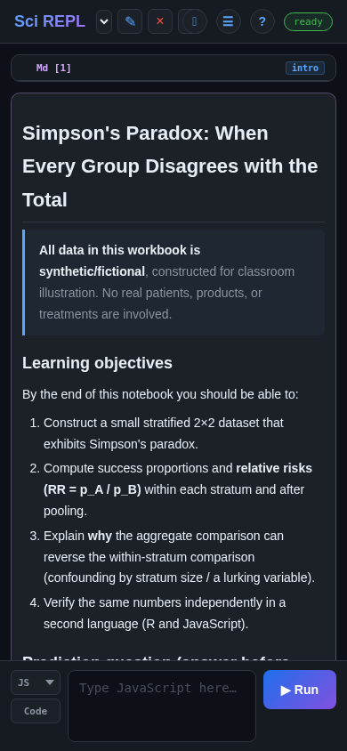

Learn by doing
Import a workbook file yourself
Already have a workbook file, or cannot find a lesson in Browse? Save the file to your device, then use Menu → Import File to add it to SciREPL. This short walkthrough uses Simpson's Paradox from the catalogue's GitHub main branch; you do not need to install a package or write code to import it.
SciREPL imports two notebook formats: .srwb, its own workbook format, and .ipynb, the Jupyter notebook format. This example uses .srwb; the format notes below explain the different execution behavior of Jupyter imports.
The Menu screenshot is a real Android capture on a Samsung Galaxy S24+, showing SciREPL Free 1.4.0-debug, not a Play Store installation. The imported-workbook screenshot is a separate Chromium browser capture of Free 1.4.0 at a mobile-sized viewport; it is not proof of an Android file-picker import. Both were taken on . Other editions, versions, and file pickers may arrange controls differently. The example is the English simpsons-paradox.srwb file from SciREPL Catalog's main branch as reviewed for this guide; that branch can change. Capture and source details record the exact image dimensions and reviewed file hash.
Step 1
Save the workbook file to your device
GitHub's main branch can contain workbooks or updates that are not yet in the latest stable catalogue release shown by Browse. Catalogue releases change independently of the app release. A direct file import lets you try a trusted workbook without waiting for it to appear in Browse.
- View Simpson's Paradox on GitHub, then download the actual workbook file (.srwb). The second link opens the raw file, not the GitHub web page.
- If your browser displays the file as text instead of downloading it, use the browser's save/download action. Save the workbook file itself, not a screenshot or an HTML page.
- Keep the filename
simpsons-paradox.srwband its.srwbextension. Note where it was saved: Android commonly uses Downloads; on desktop it may be Downloads or a folder you chose.
This is not a pinned release download. main is a development branch: the file's content and cells may change after these screenshots were taken. The file you save is a local copy; a later GitHub change does not update your imported tab automatically.
Downloading is not importing. Saving the file puts it on your device; it does not yet open a workbook in SciREPL. You do not need to open it in a text editor or put it in SciREPL's Files view. The next step selects that downloaded file.
If you already have a trusted .srwb file from someone else, use that file instead and skip the example download. Its workbook title and cell count will differ from the checks in Step 3.
Step 2
Find Menu and choose Import File
- Return to SciREPL. In the header row at the top of the app, find ☰ Menu, the button with three horizontal lines, and tap or click it.
- Choose 📂 Import File (e.g. .srwb, .ipynb, .csv, .py, .zip). If the menu is taller than the screen, scroll inside the menu to find it.
- On Android: the system file picker opens. Look in Downloads, or browse to the place where you saved the file. Select
simpsons-paradox.srwb. The picker belongs to Android, so its layout and any final Open or selection control depend on your device. - On desktop: use the file chooser to find the folder you chose when downloading. Select
simpsons-paradox.srwband confirm the selection. Use this route instead of looking for Android's Downloads screen. - Back in SciREPL, wait for the import to finish. If the menu is still open, close it to see the workbook.
A workbook is not a data-file upload. Importing an .srwb file adds its workbook as a separate tab, or separate tabs if the file contains several workbooks. Your existing tabs are kept. It does not put the workbook into the Files view, and it does not replace your current workbook.
Step 3
Check the new workbook before running anything
- Look in the workbook selector for Simpson's Paradox. Select that new tab if it is not already selected. Its introduction is headed Simpson's Paradox: When Every Group Disagrees with the Total.
- Read the introduction and scroll through the cells. The version reviewed for these screenshots has seven cells: three text cells, three R cells, and one JavaScript cell. A later version on
mainmay differ. - Find the R cells named
data,compute, andviz, in that order. The JavaScript cell is namedjs_checkand is a separate, optional check. Read the explanatory text as well as the code.

Import does not mean Run for .srwb. SciREPL does not execute the code when you import an .srwb file, even if auto-execute is enabled for other imports. Inspect code from an unfamiliar or untrusted source before choosing Run or Run All Cells.
Ordinary .srwb import currently drops saved code-cell outputs, even when the file contains them. Markdown text is retained and rendered, which is why the introduction appears immediately. To regenerate charts or other code-generated images, run their code cells again, with dependent cells in order. Import does not restore live R or other runtime variables.
Step 4
Optional: run the imported lesson
Your manual import is complete; running code is a separate step. Simpson's Paradox uses synthetic teaching data to show how comparisons within groups can disagree with the overall comparison. To explore it, tap a saved code cell's ✎ pencil, inspect the code, then use that cell's Run button.
- Run the R cell
data, then read the text cellpauseand make its prediction before runningcompute. Continue withvizto generate the chart. The later R cells depend on the earlier ones. They use base R; you do not need to install extra R packages. - If you want a separate JavaScript check, run
js_check. It is standalone: it does not depend on the R cells and does not require starting R.
First R run: SciREPL's webR runtime may need to download and initialize. A network/privacy notice may appear; read it and agree only if you want to proceed. Wait for the runtime to become ready and check the cell for errors. Importing the workbook alone has not loaded its R definitions.
For another example with a fuller run-and-edit walkthrough, see the Markov Groups lesson. That is a different workbook, with four Python cells; its export step also illustrates how to save an edited workbook copy.
Keep a copy you control. The downloaded file is the original workbook copy, not a backup of later edits. Export a workbook copy to save your changes. Clearing app or browser storage can remove local work, and Android and browser sessions do not automatically share your changes.
Other formats and safety
Know what your file carries
Jupyter notebooks (.ipynb) also use Menu → Import File, but their execution behavior differs from .srwb. If Auto-execute cells on workbook import is enabled, an .ipynb import can automatically run code cells that have no saved outputs.
Import notebook files only from sources you trust. Before importing an .ipynb, open Menu → Settings → Import & Editing and make sure Auto-execute cells on workbook import is off (unchecked). It is off by default, but check your current setting. Turning it off is not a guarantee that an arbitrary notebook is safe; inspect trusted notebook code before deciding explicitly whether to run it.
Separate data files: a normal .srwb export does not carry separate CSV files or other data stored in SciREPL's virtual filesystem (the Files view). This version of Simpson's Paradox creates its synthetic data in code, so it needs no separate data file. For a workbook that reads a CSV, follow the CSV walkthrough's Package archive export and reopen steps to carry and restore both the workbook and its data. Package archives and .zip imports are outside this short workbook-file lesson.
If something looks wrong
Check the file and the selected tab
- The picker cannot find the file: check your browser's downloads list to see where it was saved, then browse to that folder. Downloading on a desktop does not put the file in your phone's Downloads folder.
- The filename ends in .txt or .html: return to the workbook download link and save the actual file with its
.srwbextension. Renaming an HTML page to.srwbdoes not turn it into a workbook. - You still see your old workbook: close the menu and check the workbook selector for the new title. Existing tabs are preserved.
- You imported it twice: another import adds another copy; it does not update or replace the earlier tab. Check which copy you are editing before making changes.
- The title or cells do not match: check that you selected
simpsons-paradox.srwb, not a different download or a file from another lesson. The file onmaincan change; compare your copy with the current GitHub file and inspect unfamiliar code before running it.
For the basics of workbook tabs and saved-cell editing, see the first-workbook interface walkthrough. The workbooks reference explains workbook structure and cell types.